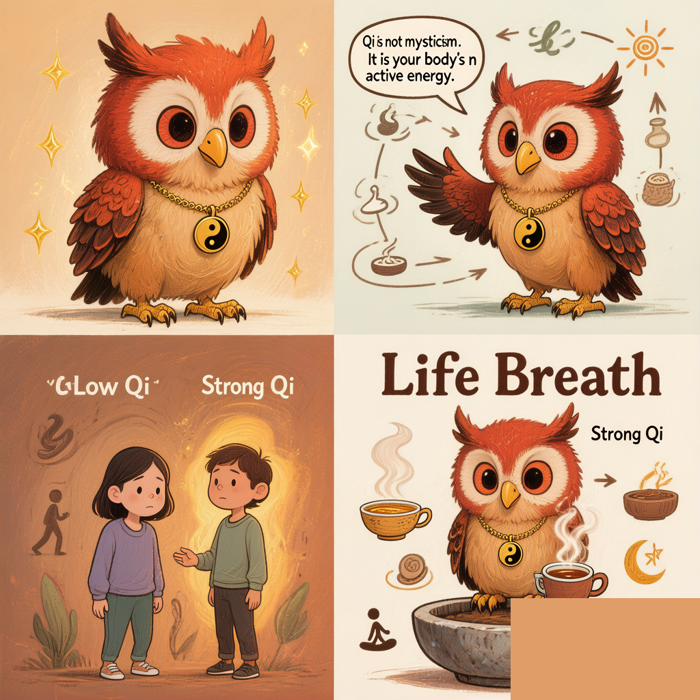

Qi Isn't Magic.
It's Your Body's OS — Running Without Updates Since 200 BC
◆ The Word Everyone Uses and Nobody Explains
Walk into any yoga studio, acupuncture clinic, or wellness blog and you'll hear it: Qi. It's been called "life force," "energy," "vital essence" — words that sound profound but explain nothing. For most Westerners, Qi sits in that uncomfortable space between "I think I kind of get it" and "this feels vaguely mystical and I'm not sure I buy it."
Let's fix that. Because here's the thing: the ancient Chinese physicians who first described Qi were not mystics. They were clinicians — meticulous observers who spent their lives correlating what people ate, how they felt, what the weather was like, and what happened when they got sick. They didn't have microscopes, but they had something equally powerful: pattern recognition across generations.
The concept they built — Qi — is not magic. It's your body's operating system, described with the vocabulary available 2,200 years ago. And it's more practical than you think.

◆ What the Huangdi Neijing Actually Says
Let's go straight to the source. The Huangdi Neijing (黄帝内经, The Yellow Emperor's Inner Classic), compiled around 200 BCE, is the foundational text that the entire Shanghan Lun school builds upon. Here is its core definition of Qi — and notice how physical it is:
"When the upper Jiao disperses the refined substances of the five cereals to warm skin and muscle, fill into the physique and moisten the fine hairs like dew moistening grasses and woods — this is called Qi." — Huangdi Neijing, Suwen (《素问》)
Read that again. Qi is not described as invisible life force floating in the cosmos. It's defined as the refined substance extracted from food, dispersed through the body to warm, fill, and moisten. Like steam rising from a pot of soup — invisible in its pure form, but undeniably physical in its effects. You feel it as warmth, as fullness, as the moisture on your skin.
This is the classical Shanghan Lun school's understanding. Qi is produced, transported, and used. It has a supply chain. And when that supply chain breaks down, you feel it.

Ollie demystifies Qi, one steam cloud at a time.
◆ The Two Qi You Experience Every Day
The Huangdi Neijing makes a sharp distinction — one that explains most of how you feel on a daily basis:
"The clear part of refined substance is called Ying Qi, and the turbid part is called Wei Qi. The Ying flows within the channels and vessels, and the Wei flows outside of the channels and vessels. They move in the whole body unceasingly." — Huangdi Neijing, Suwen
Think of it like this:
| Ying Qi (营气) — Nutritive Qi | Wei Qi (卫气) — Defensive Qi | |
|---|---|---|
| Source | The clear, refined part of food essence | The turbid, warmer part of food essence |
| Pathway | Inside the channels (vessels) | Outside the channels, near the surface |
| What it does | Nourishes organs, builds blood, fuels thinking | Protects against cold/wind/pathogens, controls sweating and sleep |
| You feel it when… | You're well-fed and mentally sharp — or foggy and depleted after skipping meals |
You wake up naturally refreshed — or feel inexplicably chilled and catch every cold going around |
This Ying-Wei pairing is the core engine of Shanghan Lun theory. When Zhang Zhongjing (张仲景) wrote the Shanghan Lun around 200 CE, he didn't invent new concepts out of thin air — he took the Neijing's Ying-Wei framework and showed, with remarkable clinical precision, exactly what happens when this balance breaks at different depths of the body. That's the six-conformation system (六经辨证) — six layers of Qi disharmony. Not six separate diseases.
◆ The Shanghan Lun Insight: Disease Is Qi Out of Position
Here's the paradigm shift that separates classical Shanghan Lun thinking from modern symptom-based medicine:
The Shanghan Lun doesn't ask "which germ caused this?"
It asks: "At what depth has the Qi become disordered, and in which direction is it moving?"
Consider the six conformations as layers of an onion:
| Conformation | Qi Dynamic | In Plain English |
|---|---|---|
| Taiyang (太阳) | Opening outward | Your surface Qi is blocked — like a window that won't open. Chills, body aches. |
| Yangming (阳明) | Closing inward | Heat is trapped deep inside — a furnace with no vent. Fever, thirst, constipation. |
| Shaoyang (少阳) | Pivot/Hinge | Qi can't decide whether to go in or out — stuck in the middle. Alternating chills and fever, bitter taste. |
| Taiyin (太阴) | Opening inward | Digestive Qi has collapsed. Bloating, diarrhea, no appetite. |
| Shaoyin (少阴) | Pivot (deep) | Core fire and water can't communicate. Exhaustion so deep you can barely get out of bed. |
| Jueyin (厥阴) | Closing (terminal) | Yin and Yang Qi are separating. Complex, chaotic symptoms — the body's last stand. |
Every Shanghan Lun formula — from the gentle Cinnamon Twig Decoction (桂枝汤) that harmonizes Ying and Wei at the surface, to the fierce White Tiger Decoction (白虎汤) that clears blazing Yangming heat — is simply guiding Qi back to where it belongs.
◆ The Most Practical Passage About Qi You'll Ever Read
If you take nothing else from this article, take the Nine Qi Disorders from Suwen Chapter 39. This passage — written over 2,000 years ago — describes exactly how your emotions physically move Qi in your body:
Anger raises Qi up.
— Huangdi Neijing, Suwen, Chapter 39 (《素问·举痛论》)
Overjoy slows Qi.
Sorrow disperses Qi.
Fear lowers Qi down.
Cold blocks Qi.
Heat discharges Qi.
Fright disturbs Qi.
Overwork consumes Qi.
Overthinking stagnates Qi.
This isn't metaphor. It's clinical observation:
- Anger → liver Qi surges upward: red face, headache, tight neck. Your grandmother wasn't wrong about "don't get so angry you burst a blood vessel."
- Overthinking → spleen Qi stagnates: you sit at your desk for three hours, your digestion stops, you feel bloated without having eaten.
- Fear → kidney Qi descends: the phrase "scared the piss out of me" exists in every language for a reason.
- Overwork → Qi is consumed: chronic burnout isn't a mood — it's literal Qi depletion. You've spent more than you've produced.
Zhang Zhongjing's genius was recognizing that these Qi dynamics don't just happen in isolation — they layer on top of each other. A patient with underlying Spleen Qi deficiency (from years of overthinking and irregular eating) who then catches a cold wind (Wei Qi breached) develops a totally different disease pattern than a robust person with the same cold. Same trigger, different Qi landscape, different disease.
◆ Why This Matters More Than Ever
In 2026, we have more data about our bodies than any civilization in history — sleep trackers, heart rate variability, continuous glucose monitors. Yet we're more confused than ever about why we feel the way we feel.
The classical TCM framework offers something modern medicine doesn't: a unified theory of feeling. Forget fixing the symptom. Ask: what is the state of your Qi, and where is it stuck?
Here's what makes this framework different:
- It connects dots that Western medicine keeps separate. Digestion, sleep, emotions, immunity — all are Qi. A breakdown in one always affects the others. Your IBS and your anxiety are not separate problems.
- It gives you agency. The Nine Qi Disorders aren't something that "happens to you" — they're dynamics you can observe and influence. You can't control getting angry, but you can notice what anger does to your body, and over time, respond differently.
- It operates in layers, not categories. Shanghan Lun's six conformations are a depth chart, not a checklist. Your health isn't binary (sick/healthy) — it's a question of how deep the disharmony has penetrated.
- And it doesn't ask you to believe anything. It just asks you to pay attention. No faith required. Your body is already doing the talking.
◆ Three Things You Can Do Starting Tomorrow
1. Track Your Emotional Qi Map
For one week, when you feel a strong emotion, write down: (a) the emotion, (b) where you physically felt it in your body. Anger in the shoulders? Worry in the stomach? Fear in the lower back? This is your personal Qi topography. No diagnosis — just observation. The Neijing's Nine Qi Disorders will start making visceral sense.
2. Protect Your Wei Qi Before Bed
Wei Qi circulates at the body's surface during the day and retreats inward at night. A warm (not hot) foot bath 30 minutes before sleep helps Wei Qi descend smoothly. Avoid cold drinks after 8pm — cold blocks Qi (remember the Nine Disorders: "Cold blocks Qi"). If you wake up feeling like you fought a war in your sleep, your Wei Qi didn't settle properly.
3. Eat Warm, Eat Early
The Neijing is explicit: Qi comes from food. The Spleen and Stomach transform food into Ying and Wei Qi — but they need warmth to do it. A cold smoothie for breakfast is like throwing ice on a campfire. Try a warm breakfast for three days (congee, oatmeal, eggs, soup) and notice whether your mid-morning energy changes. This is the most direct way to experience Qi production in real time.
Ollie says: "Qi isn't something you need to believe in. It's something you need to notice. The Huangdi Neijing didn't ask for faith — it asked for attention. Your body is already speaking the language of Qi. The question is: are you listening?"
🦉 Your body knows what it's doing. Let's listen.
Coming next: "The Shanghan Lun Philosophy: Living With Nature, Not Against It" — how Zhang Zhongjing's 1,800-year-old clinical manual predicted everything we're learning about circadian rhythms and immune function.
Sources & Further Reading
- Huangdi Neijing, Suwen (《黄帝内经·素问》), compiled circa 200 BCE. The primary classical source for the definition of Qi, the Ying-Wei (Nutritive-Defensive) distinction, and the Nine Qi Disorders (Chapter 39, 《举痛论》). All inline quotes above are from this text.
- Zhang Zhongjing (张仲景). Shanghan Lun (《伤寒论》, Treatise on Cold Damage Disorders), circa 200–210 CE. The clinical masterpiece that applies Neijing theory to practical diagnosis via the Six-Conformation System (六经辨证) — the framework this article summarizes.
- Unschuld, Paul U. Huang Di Nei Jing Su Wen: Nature, Knowledge, Imagery in an Ancient Chinese Medical Text. University of California Press, 2003. The definitive English scholarly translation of the Suwen, with extensive philological and historical commentary.
- Mitchell, Craig, Feng Ye & Nigel Wiseman. Shang Han Lun: On Cold Damage. Paradigm Publications, 1999. A respected English translation with classical commentary, ideal for readers who want to explore the original formula texts.